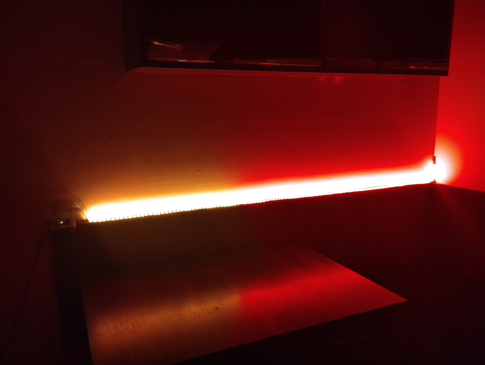
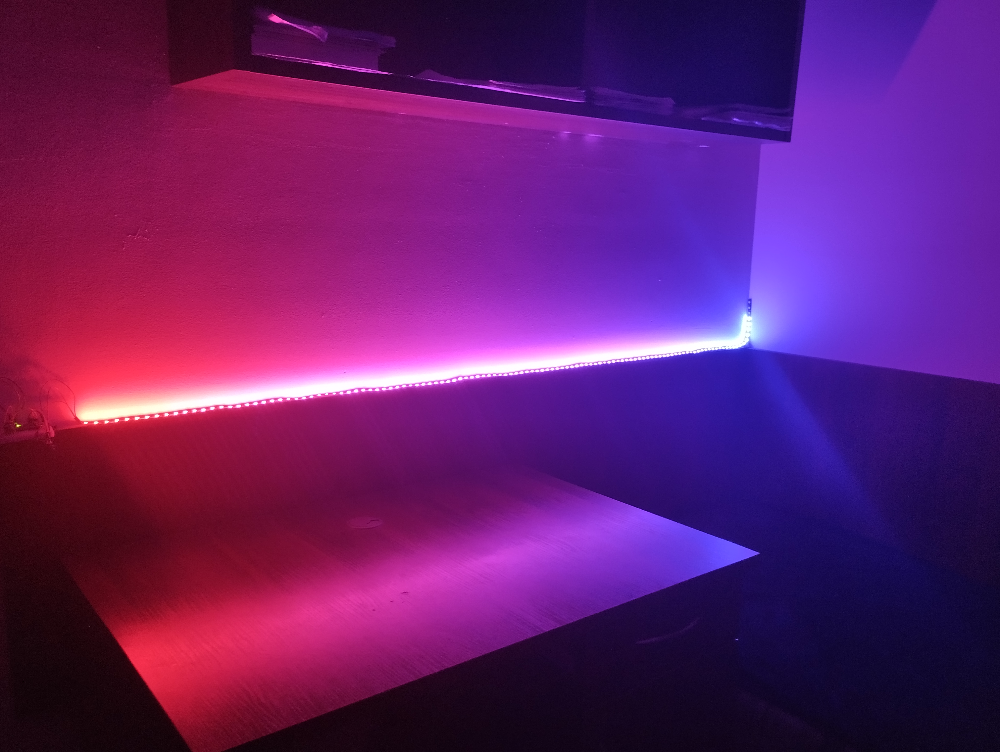

Zrobiłem tryb włączania losowych kolorów.
Dla koloru, który mi się podoba, otrzymuję kod RGB.
2. Później podzieliłem pasek LED na dwa kolory.

Również zrobiłem tryb włączania losowych kolorów.
Dla kolorów, które mi się podobają, otrzymuję kod RGB.
3.
Możliwość oświetlenia gradientowego.
W aplikacji podajesz kolor początkowy i kolor końcowy - powstaje gradient.

4. Używam tego trybu do tańczenia pod muzyke klubową.
5.
Używam tego trybu, gdy robię wieczór disco.
Wyłączam światło w pokoju.
Włączam muzykę w stylu disco.
Włączam ten tryb na taśme światłowodowej.
W pokoju tworzy się małą atmosfera disco.
Dawaj zatańczymy ?!
6.
Używam tego trybu, gdy wygłupiamy się pod energiczne, szybkie utwory.
To oświetlenie daje energię szaleństwa.
7. Zwykłe miganie jest również używane głównie dla muzyki klubowej.
Teraz jeszce pracuję nad synchronazacją muzyki i światła.
Ogólnie mi się podoba zajmować się oświetleniem.
Ale na razie trybów i kolorów, które mam, mi wystarcza.
Konieczności w nowych nie ma.
I wśród moich znajomych też nie ma takiej potrzeby.
Dlatego teraz tym się nie zajmuję.
Czekam, kiedy pojawi się taka konieczność.